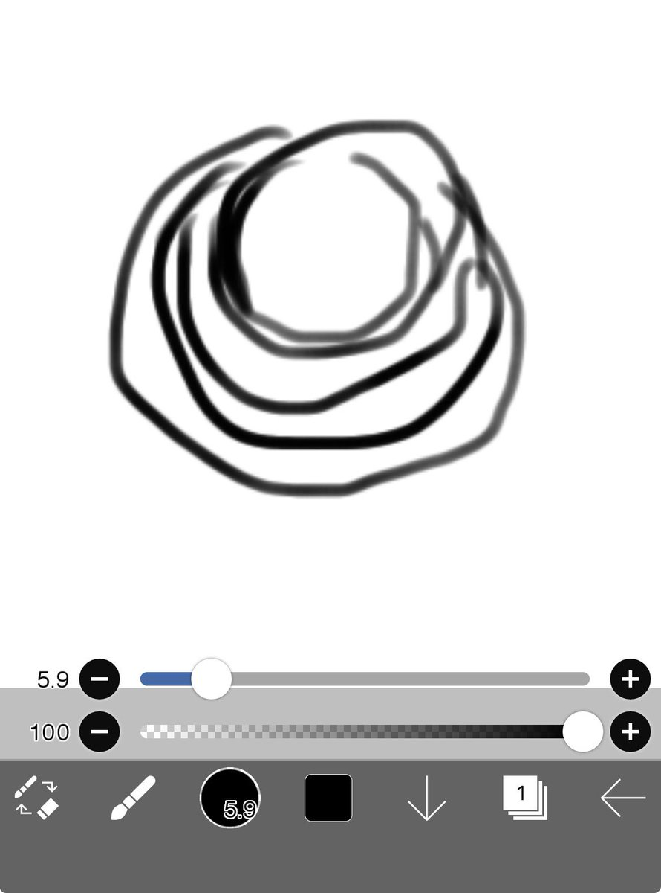

氫氣球
@allnightforlive
但是他引導著我，留下來聽他說話。我知道他是故意的。他摔碎了那個東西，為了讓我停在這裡。我看那些玻璃製品的時候無比清晰，就像真的在現實裡一樣。
那個玻璃一環一環的連著，應該是並聯⋯？
後來發現他那邊除了這一樣跟另外他砸掉的那樣以外，都是狐狸的形狀。
還有他的得獎作品，也不是狐狸。

氫氣球
@allnightforlive
他說他會等我，我很喜歡他做的一切，他應該要得獎，但是他的友人做了不夠多的事情卻比他有了更大，他沒有拿的應有的獎，他說要等我，我給他寫了字條，寫錯了，我也沒留給他，說最後一節下課就來
我卻醒了。